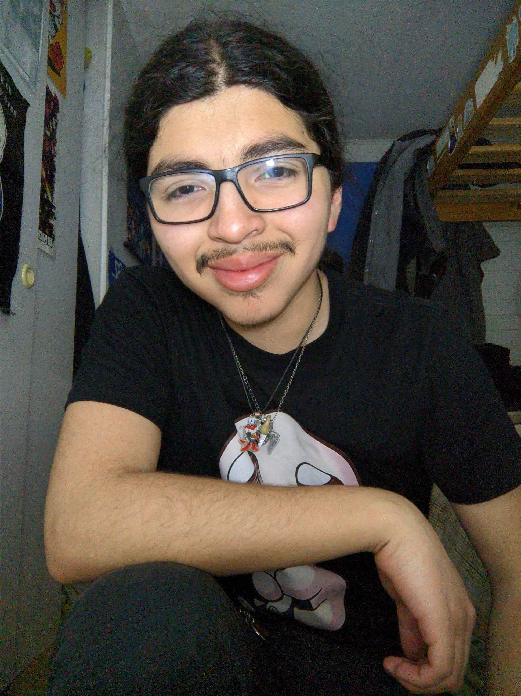

<app-header [isNotHome]="isNotHome" [pageTitle]="pageTitle"></app-header>


<ion-content>

  <ion-card>
    
    <ion-card-header>
      <ion-card-subtitle color="warning">lo confundieron con el Bastián una vez, no es moreno de piel, pero si de apellido</ion-card-subtitle>
      <ion-card-title>Tomas Ignacio 'enrique' Moreno Molina</ion-card-title>
    </ion-card-header>
    <ion-card-content>
      <ion-text color="medium">
        carrera: ingeniería en informática<br>
        edad: 22
      </ion-text>
    </ion-card-content>

    <ion-card-content>
      <ion-text color="medium">encargado de realizar la carga de la pagina y el Coversor.</ion-text>
    </ion-card-content>
  </ion-card>
  

</ion-content>
<ion-footer><ion-card>
  <ion-button color= "warning" shape="round" size="small" fill="outline" href="/about">volver
  <ion-icon slot="start" name="chevron-back-outline"></ion-icon>
</ion-button></ion-card></ion-footer>
